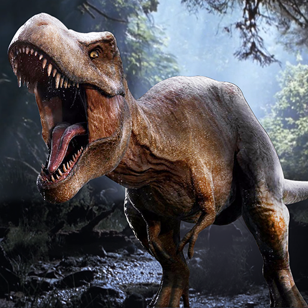

t-Rex

Durante muchos años los científicos debatieron esto. Hoy en día, la mayoría de los paleontólogos coinciden en que el T-Rex era un depredador activo que cazaba sus propias presas (como herbívoros gigantes del estilo del Triceratops o Edmontosaurus), pero que también aprovechaba carroña (animales ya muertos) si se le presentaba la oportunidad.